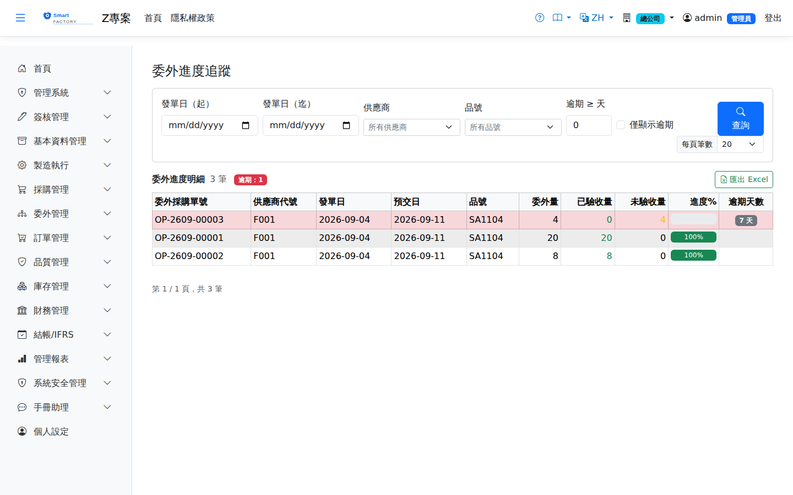

委外進度追蹤Outsource Progress
路由：/OutsourceProgress | 委外單發料/收貨進度總覽Route: /OutsourceProgress | Overview of issue and receipt progress per outsource order
追蹤各委外採購單的委外量、已驗收量與逾期情形（委外稽催表），掌握外包產能與到貨風險。拆單行以本行拆單量計算；已驗收量含「已確認」以上的委外收貨。Tracks the ordered, accepted and overdue quantities of every outsource PO, giving a view of subcontracted capacity and delivery risk. Split lines are measured by their own quantity, and the accepted quantity includes outsource receipts that are confirmed or later.

委外進度追蹤畫面截圖（示意，實際欄位/資料依權限與查詢條件而異）Outsource progress screenshot (illustrative; actual fields and data vary by permission and query criteria)
查詢Search
1
查詢列可依「發單日區間、供應商、品號」過濾後點「查詢」。Filter by order date range, supplier and product in the search bar, then click "Search".
2
「逾期 ≥ 天」可只列逾期達 N 天以上的行；「僅逾期」勾選則列出全部逾期行。逾期天數以徽章顯示（≥14 天黃、≥30 天紅）。"Overdue ≥ Days" lists only lines overdue by at least N days; checking "Overdue Only" lists every overdue line. Overdue days appear as a badge (yellow from 14 days, red from 30).
欄位說明Field reference
查詢條件Query criteria
| 條件Condition | 說明Guide |
|---|---|
| 發單日（起 / 迄）Order date (from / to) | 依委外採購單的開單日期區間篩選Filters by the order date range of the outsource PO |
| 供應商 / 品號Supplier / Product | 各自縮小查詢範圍each narrows the query scope |
| 逾期 ≥ 天 / 僅顯示逾期Overdue ≥ Days / Overdue Only | 只列出逾期達指定天數以上的委外單Lists only outsource orders overdue by at least the given number of days |
報表欄位Report fields
| 欄位Field | 說明Guide |
|---|---|
| 委外採購單號OPO No. | 委外加工的採購單，可回溯明細The outsource purchase order, so the detail can be traced |
| 供應商代號Supplier | 承接加工的委外廠商Subcontractor doing the work |
| 發單日 / 預交日Order Date / Delivery Date | 開單日期與承諾交回日Order date and promised return date |
| 品號Item | 委外加工的料件Item sent out for processing |
| 委外量 / 已驗收量 / 未驗收量Ordered / Received / Pending | 發出的加工數量、已收回並驗收的數量，以及仍在廠商端的差額Quantity sent for processing, quantity received and accepted, and the balance still at the subcontractor |
| 進度%Progress% | 已驗收量 ÷ 委外量Received ÷ Ordered |
| 逾期天數Overdue Days | 查詢日 － 預交日；委外在製品仍屬本公司存貨，逾期同時是交期與存貨風險Query date − promised delivery date; work in progress at a subcontractor is still your inventory, so an overdue item is both a delivery and an inventory risk |